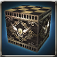
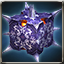
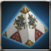
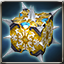
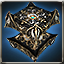
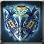
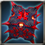
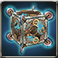
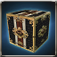
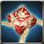

Crescemento Cube
Available to equip above Lv. 1 - Recruitment character
Cube that is decided the A.R. and ATK Power according to the players level.
Max 6 enhancement possible.
Attributes
Rating: 0
Available to equip above Lv. 1 - Recruitment character
Cube that is decided the A.R. and ATK Power according to the players level.
Max 6 enhancement possible.

Available to equip above Lv. 1 - Recruitment character
Trial Cube made as a tester to develop the powerful weapon. Cant be used continuously, as its durability wasnt considered while making.[ATK to All types+120%, Attack SPD+20%]
Available to equip above Lv. 1 - Recruitment character
This item can not use Dazzling Ore.
Available to equip above Lv. 1 - Recruitment character
Colony War
Available to equip above Lv. 1 - Recruitment character
Trial Cube made as a tester to develop a better quality weapon. It can not be used continuously since its durability was not considered while making. [All Types of ATK +100%, ATK SPD +20%]
Available to equip above Lv. 100 - Recruitment character
A cube made for pioneers convenient usage. Feels a mysterious power from it.
Lv.100 - Exclusive equipment for recruitment character /Exclusively for above Expert
A cube that belongs to the Gridley family who prospered in the past. [ATK to all species +10%, ATK SPD +10%, Max SP +15%, Magic Penetration +5]
 Magic Weapon Crystal - Lv 35 x2 Magic Weapon Crystal - Lv 35 x2 |
 Star Stone x50 Star Stone x50 |
 kryptonite x200 kryptonite x200 |
 Enchantchip Veteran x100 Enchantchip Veteran x100 |
 Elemental Jewel x10 Elemental Jewel x10 |
 Fool Stone x1 Fool Stone x1 |

Lv.100 - Marchetti / Master and above
A Cube that was crafted by Armonium which maintained holy power in spite of erosion of Abyss. It maintains the weapon shape by the holy power, but the beautiful shape has been encroached and ominous. [Penetration, Immunity-5]
Available to equip above Expert Level - Recruit Character
A reality distorting device Marchetti made for fun.
Available to equip above Expert Level - Recruit Character
A reality distorting device Marchetti made for fun.

Available to equip above Expert Level - Recruit Character
The second Cube made my Marchetti for fun. Every time he makes, it shows a different performance.

Available to equip above Expert Level - Recruit Character
A cube that was crafted by Armonium which maintained holy power in spite of erosion of Abyss. [Absorbs 5% of attack damage as HP, Penetration +5, DEF +8]
| Enchantchip Veteran x100 |
| Magic Weapon Crystal - Lv 34 x1 |
 Armonias Holywater x10 Armonias Holywater x10 |
| Fool Stone x1 |
| Fool Stone x1 |
Available to equip above Expert Level - Recruit Character
A reality distorting device Marchetti made for fun.
Available to equip above Expert Level - Recruit Character
A reality distorting device Marchetti made for fun.
Available to equip above Expert Level - Recruit Character
Cube that belongs to a prospering family in the past. At that time, giving weapons to the nation was one way to be approved of the familys legitimacy officially. [Penetration +3]
| Enchantchip Veteran x100 |
| Magic Weapon Crystal - Lv 33 x1 |
 Shiny Crystal x200 Shiny Crystal x200 |
| Fool Stone x1 |
| Fool Stone x1 |
Available to equip above Master - Recruitment characters
The second Cube made my Marchetti for fun. Every time he makes, it shows a different performance.
Available to equip above Master - Recruitment characters
The second Cube made my Marchetti for fun. Every time he makes, it shows a different performance.

Available to equip above High Master - Recruitment characters
This brand new Cube was made at the request of Consul of Illier and based on Dr. Marchetts design plan. [Valerons Protection] can be added by Violet Valeron.
| Magic Weapon Crystal - Lv 37 x1 |
 Black Insignia of Evora x100 Black Insignia of Evora x100 |
| Red Insignia of Magic Corps x100 |
 Symbol of Patrikyon x50 Symbol of Patrikyon x50 |
 Warped weapon debris x500 Warped weapon debris x500 |
 Shiny Sollarion x300 Shiny Sollarion x300 |
 liquid of Heaven x5 liquid of Heaven x5 |

Available to equip above High Master - Recruitment characters
Cube containing Water Master Chloes power
[PEN+10, Extra Damage to All Tribes+25%]
| Magic Weapon Crystal - Lv 38 x1 |
| Armonium Ore - Red x500 |
| Armonium Ore - Red x500 |
 TimePiece : Rose x500 TimePiece : Rose x500 |
| TimePiece : Rose x900 |
 Vertrauen Symbol x1 Vertrauen Symbol x1 |
 Star Essence x50 Star Essence x50 |
Available to equip above High Master - Recruitment characters
Cube containing Water Master Chloes power
[PEN+10, Extra Damage to All Tribes+25%]

Available to equip above High Master - Recruitment characters
The weapon made to fight against Abyss Army by processing Earth-color Armonium containing Abyss Essence. It can retain the shape as a weapon thanks to the holy power, but its shape looks ominous owing to Abyss Essences power.{br}[Extra damage to Demon type enemy+25%]
| Magic Weapon Crystal - Lv 38 x1 |
| liquid of Heaven x10 |
 Armonium Ore - Black x10000 Armonium Ore - Black x10000 |
| Fool Stone x1 |
| Fool Stone x1 |
Available to equip above High Master - Recruitment characters
The weapon made to fight against Abyss Army by processing Earth-color Armonium containing Abyss Essence. It can retain the shape as a weapon thanks to the holy power, but its shape looks ominous owing to Abyss Essences power.{br}[Extra damage to Demon type enemy+25%]

Available to equip above High Master - Recruitment characters
Mysterious Treasure Chest
Available to equip above High Master - Recruitment characters
Mysterious Treasure Chest

Available to equip above Master - Recruitment characters
A masterpiece cube made by delicate skills of artisan.
 Pure Essence x1000 Pure Essence x1000 |
 Fallen Essence x1000 Fallen Essence x1000 |
 Balance Essence x1000 Balance Essence x1000 |
| Masterpiece Cube Blueprint x50 |
| Magic Weapon Crystal - Lv 35 x1 |
| Fool Stone x1 |
Available to equip above Master - Recruitment characters
A masterpiece cube made by delicate skills of artisan.
Available to equip above High Master - Recruitment characters
This brand new Cube was made at the request of Consul of Illier and based on Dr. Marchetts design plan. [Valerons Protection] can be added by Violet Valeron.
Available to equip above High Master - Recruitment characters
Old weapon Violet Valeron restored in the past. Its performance is lower than the original version.{br}[ATK to all types+100%]
Available to equip above High Master - Recruitment characters
Writing

Available to equip above High Master - Recruitment characters
The weapon of luxirious decoration drank lots of bloods and dyed red by oneself. The weapon that contained grudge seems to want the owners bloods as well. It gives a heavy cross. [Damage to all tribes +80%, Penetration +10, ATK Speed -20%]